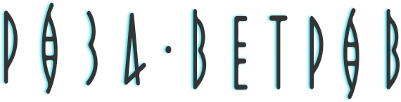
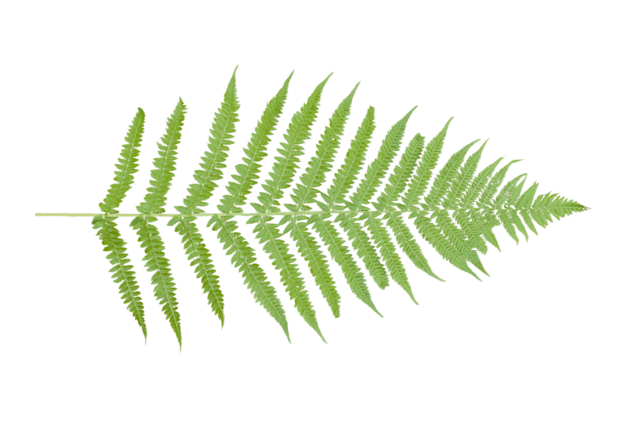
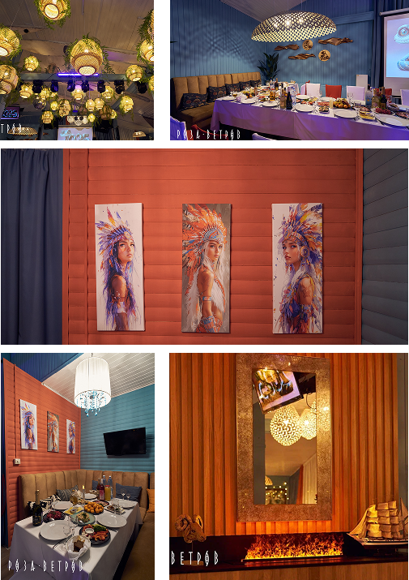

Добро пожаловать в ресторан

С нами всегда попутный ветер, в море
запоминающихся моментов!



Роза Ветров
Это закрытый ресторан на берегу Волги прямо в черте города, который работает круглый год.
Мы рады вам предложить расположиться зимой на нашей закрытой территории в лаунж-зоне в стиле бохо.
Жаркой весной уже для вас начнут снова работать беседки в сосновом бору, летнее кафе и шатер, в котором наши гости с удовольствием отмечают свои самые важные мероприятия.
Наше уютное место славится не только своим потрясающим видом, но и авторской кухней.

Мы находимся тут!
Ресторан "Роза-Ветров"
Ульяновск, п. Рыбацкий, 1
Набережная реки Волга
8 (987) 634 14-11
54-41-41
Пн-Чт | 12:00 до 00:00
Пт-сб | 12:00 до 01:00
Вс | 12:00 до 00:00